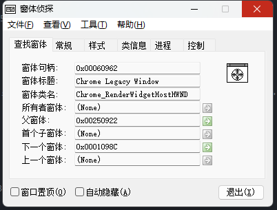

pywinauto 自动化

pywinauto 通过其Application 模块打开或者载入进程以追踪其GUI 界面，并可以发送鼠标或键盘事件。
from pywinauto import Application
app = Application(backend="uia").start("mspaint.exe")
dlg = app.top_window()
dlg.print_control_identifiers()
# Control Identifiers:
# Dialog - '无标题 - 画图' (L711, T269, R2247, B1133)
# ['无标题 - 画图Dialog', '无标题 - 画图', 'Dialog']
# child_window(title="无标题 - 画图", control_type="Window")
# |
# | Pane - '' (L719, T461, R2239, B1093)
# | ['Pane', 'Pane0', 'Pane1']
# ...
# | |
# | | Button - '关闭' (L2193, T270, R2240, B300)
# | | ['关闭', 'Button54', '关闭Button']
# | | child_window(title="关闭", control_type="Button")
dlg[u'关闭'].click()
# <uia_controls.ButtonWrapper - '关闭', Button, 4634795030945390888>Window 方法
实测下面方法在Win11 中文系统下的Notepad 程序测试无效：
app.windows()获取所有窗口app.window(title="title", title_re=".*", class_name="clazz", handle=win)获取某个窗口，条件可选app['key']根据魔术字符串获取窗口
获取控件
app.dlg.ctrlapp['dlg']['ctrl']或者app[u'dlg'][u'ctrl']针对非英文环境
Win10 笔记本
Win10+ 的操作系统中，笔记本和计算器程序似乎是作为Desktop 窗口的子窗口出现的，所以直接从进程获取窗口会出现异常。这个时候可以通过Desktop 对象获取：
from pywinauto import Desktop, Application
app = Application(backend="uia").start("calc.exe")
dlg = Desktop(backend="uia")[u'计算器']
dlg.type_keys('2*3=')
# <uiawrapper.UIAWrapper - '计算器', Dialog, 2219639103146925685>
# 程序显示结果2*3=6
dlg.print_control_identifiers()
# Control Identifiers:
# Dialog - '计算器' (L1002, T35, R1518, B710)
# ['计算器', '计算器Dialog', 'Dialog', '计算器0', '计算器1', '计算器Dialog0', '计算器Dialog1', 'Dialog0', 'Dialog1']
# child_window(title="计算器", control_type="Window")
# |
# | Dialog - '计算器' (L1322, T36, R1510, B68)
# | ['计算器2', '计算器Dialog2', 'Dialog2']
# ...
# | |
# | | Button - '最小化 计算器' (L1372, T36, R1418, B68)
# | | ['Button', '最小化 计算器', '最小化 计算器Button', 'Button0', 'Button1']
# | | child_window(title="最小化 计算器", auto_id="Minimize", control_type="Button")
# | |
# ...
# | Pane - '' (L1010, T68, R1510, B702)
# | ['Pane', '计算器Pane']
dlg[u'最小化 计算器'].click()
# <uia_controls.ButtonWrapper - '最小化 计算器', Button, 4656439219294527907>print_control_identifiers 是一个非常重要的函数，利用它可以显示可用的窗口或控件的信息。
软件自动化安装
这里只写一个思路，一开始设计项目的时候总想着考虑得非常全面，但是随着认知的清晰，发现投入的费效比才是最重要的。设计一个可以灵活配置的安装脚本，思路上可能达到自己设计脚本语言的水平；然而我需要的只是一个安装软件的脚本，就算我有十几个软件需要安装，也只是需要十几个脚本罢了。
配合
Nuitka和PySide6做一个图形界面还是蛮必须的。
有用的工具
之前在看雪论坛上看过一个比较好用的窗口侦测软件。另外，了解一下Windows 窗口机制，对于更好的认识软件自动化应该是蛮有用的。